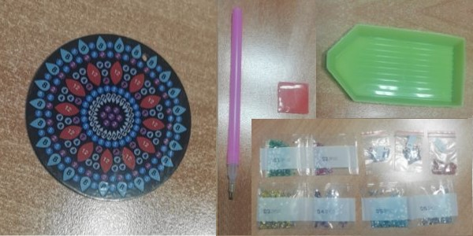
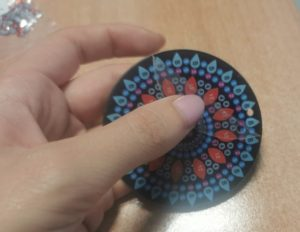
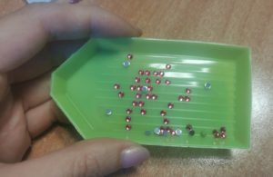
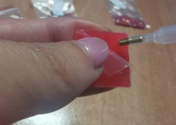
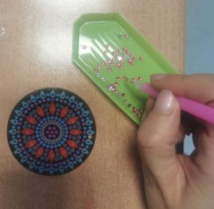
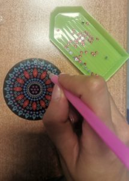

O que é o Diamond Painting?
O Diamond Painting ou Pintura Diamante é um passatempo muito divertido e relaxante que consiste na combinação de ponto de cruz e pintura com números, em que são coladas pequenas peças (os diamantes) numa tela autocolante. Todos os kits adquiridos na nossa página trazem todo o material necessário para executar o trabalho, não sendo necessário adquirir mais nenhum material."
O que contém o meu Kit?
Os kits diamond painting trazem todo o material necessário para executar o trabalho: a tela (ou acessório) autocolante, os diamantes em quantidade suficiente e o kit de Ferramentas composto pelo tabuleiro, a cera e a caneta

Instruções...

Retirar parte da película da tela (ou acessório) e verificar qual a cor correspondente ao símbolo que iremos colocar

Deitar a cor respetiva no tabuleiro, agitando para que os diamantes fiquem virados para cima (parte lisa para baixo)

Retirar a película da cera e pressionar a caneta sobre a mesma, para que a cera fique dentro da ponta

Pegar nos diamantes com a ponta da caneta, colando-os na tela (ou acessório)

Repetir o processo para todos os símbolos até que o trabalho fique concluído